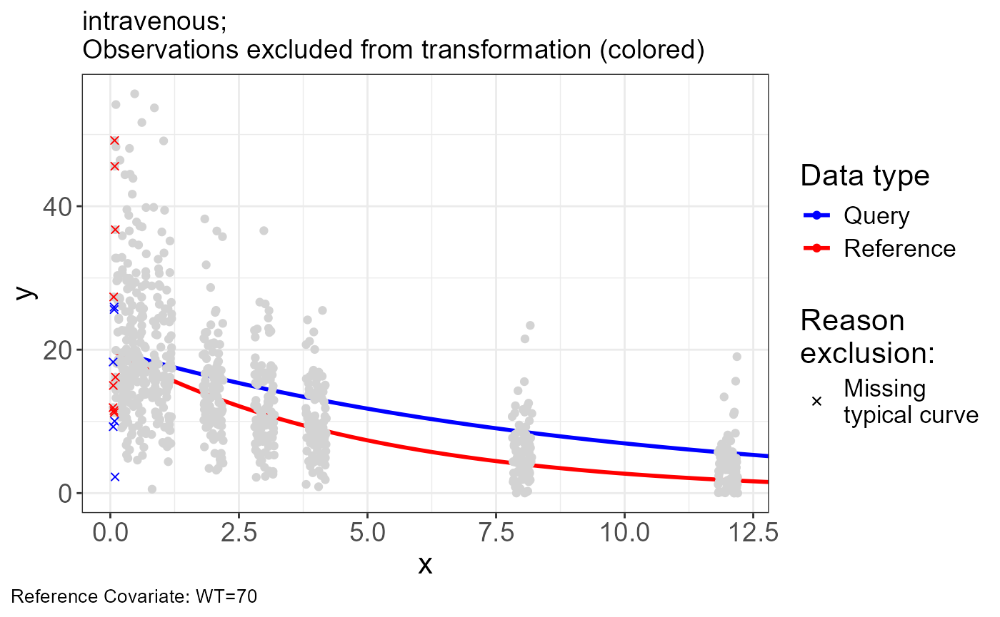
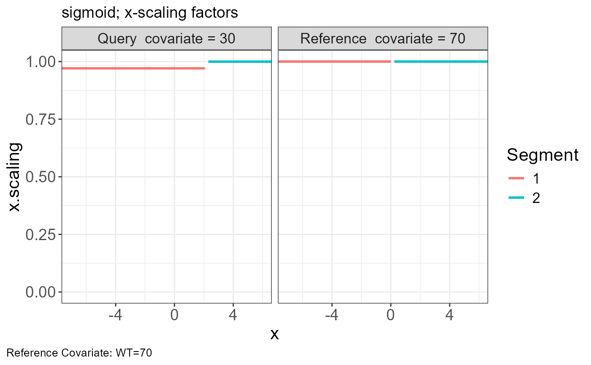
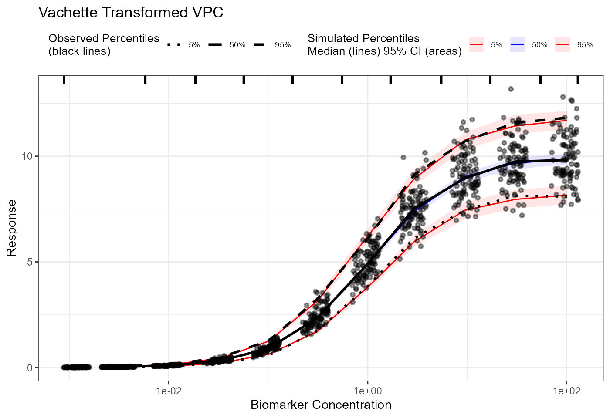
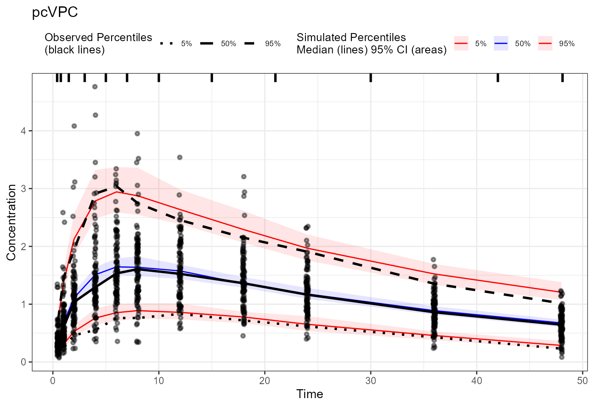
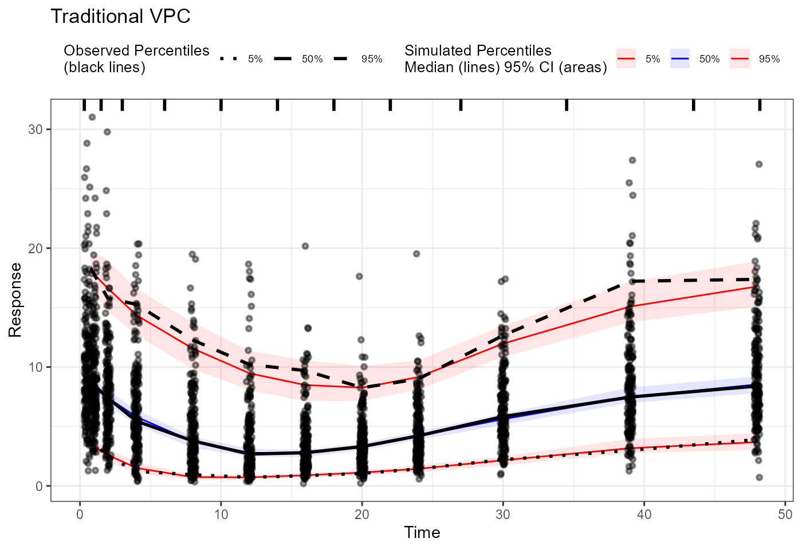

Setup
Installation
remotes::install_github("certara/vachette")Examples
Intravenous
Import Data
Data files:
- iv-obs.csv
- iv-typ.csv
- iv-vpc.csv
obs <- read.csv("https://certara-training.s3.amazonaws.com/Vachette/examples/examples/iv-obs.csv")
typ <- read.csv("https://certara-training.s3.amazonaws.com/Vachette/examples/examples/iv-typ-minmax.csv")
sim <- read.csv("https://certara-training.s3.amazonaws.com/Vachette/examples/examples/iv-sim.csv")Vachette Transformations
Generate transformations for obs.data and
sim.data
vd <-
vachette_data(
obs.data = obs,
typ.data = typ,
sim.data = sim,
covariates = c(WT=70),
mappings = c(x = "time",
OBS = "DV"),
model.name = "intravenous"
) |>
apply_transformations()Vachette Plot
p.obs.ref.query(vd) 
p.vachette(vd)
p.scaling.factor(vd)
p.obs.excluded(vd)
vd$obs.excluded## # A tibble: 15 × 15
## REP ID x OBS dosenr WT COV region region.type ucov y
## <dbl> <int> <dbl> <dbl> <int> <int> <chr> <int> <chr> <dbl> <dbl>
## 1 1 3 0.0743 25.9 1 30 30 1 open 1 25.9
## 2 1 10 0.0920 2.26 1 30 30 1 open 1 2.26
## 3 1 12 0.0739 25.6 1 30 30 1 open 1 25.6
## 4 1 21 0.0830 10.0 1 30 30 1 open 1 10.0
## 5 1 40 0.0559 9.26 1 30 30 1 open 1 9.26
## 6 1 48 0.0547 18.3 1 30 30 1 open 1 18.3
## 7 1 52 0.0997 16.2 1 70 70 1 open 2 16.2
## 8 1 57 0.0749 11.2 1 70 70 1 open 2 11.2
## 9 1 61 0.0961 36.7 1 70 70 1 open 2 36.7
## 10 1 67 0.0538 11.9 1 70 70 1 open 2 11.9
## 11 1 78 0.0711 11.5 1 70 70 1 open 2 11.5
## 12 1 90 0.0579 15.0 1 70 70 1 open 2 15.0
## 13 1 91 0.0862 45.6 1 70 70 1 open 2 45.6
## 14 1 93 0.0828 49.2 1 70 70 1 open 2 49.2
## 15 1 95 0.0651 27.4 1 70 70 1 open 2 27.4
## # ℹ 4 more variables: ref <chr>, exclude <dbl>, PRED <dbl>, reason <chr>VPC
Extract obs.all and sim.all with vachette transformations
obs_trans <- vd$obs.all
sim_trans <- vd$sim.allGenerate traditional and vachette transformed VPC’s
vpc <- observed(obs_trans, x = x, y = y) |>
simulated(sim_trans, x = x, y = y) |>
binning(bin = "centers",
centers = c(0.25, 0.5, 1, 2, 3, 4, 8, 12)) |>
vpcstats()
pcvpc <- observed(obs_trans, x = x, y = y) |>
simulated(sim_trans, x = x, y = y) |>
binning(bin = "centers",
centers = c(0.25, 0.5, 1, 2, 3, 4, 8, 12)) |>
predcorrect(pred = PRED) |>
vpcstats()
vpc_vachette <- observed(obs_trans, x = x.scaled, y = y.scaled) |>
simulated(sim_trans, x = x.scaled, y = y.scaled) |>
binning(bin = "centers",
centers = c(0.25, 0.5, 1, 2, 3, 4, 8, 12)) |>
vpcstats()
plot(vpc) + labs(title = "Traditional VPC",
x = "Time", y = "Concentration")Sigmoid
Import Data
Data files:
- sigmoid-obs.csv
- sigmoid-typ-minmax.csv
- sigmoid-sim.csv
obs <- read.csv("https://certara-training.s3.amazonaws.com/Vachette/examples/examples/sigmoid-obs.csv")
typ <- read.csv("https://certara-training.s3.amazonaws.com/Vachette/examples/examples/sigmoid-typ-minmax.csv")
sim <- read.csv("https://certara-training.s3.amazonaws.com/Vachette/examples/examples/sigmoid-sim.csv")Vachette Transformations
Generate transformations for obs.data
vd <-
vachette_data(
obs.data = obs,
typ.data = typ,
sim.data = sim,
covariates = c(WT=70),
log.x = TRUE,
mappings = c(x = "bmx",
OBS = "DV"),
model.name = "sigmoid"
) |>
apply_transformations()Vachette Plot
p.obs.ref.query(vd)
p.vachette(vd)
p.scaling.factor(vd)
geomadd <- function(.x) {
.x + coord_cartesian(xlim = c(min(vd$obs.all$x.scaled), vd$xstop)) + scale_x_log10(limits = c(min(vd$obs.all$x.scaled), vd$xstop))
}
plot(
p.vachette(vd) +
geom_point(
data = vd$obs.all[vd$obs.all$WT != 30, ],
aes(x = x.vacher, y = y.scaled, fill = "V2ACHER"),
pch = 1,
size = 4
) +
labs(fill = "",
x = "ln(Biomarker Concentration)",
y = "Response") +
scale_fill_manual(values = "blue", labels = c(expression(
paste("V" ^ 2 * "ACHER")
)))
)VPC
Extract obs.all and sim.all with vachette transformations
obs_trans <- vd$obs.all
sim_trans <- vd$sim.allGenerate traditional and vachette transformed VPC’s
vpc <- observed(obs_trans, x = exp(x), y = y) |>
simulated(sim_trans, x = exp(x), y = y) |>
binning(bin = "centers",
centers = c(0.003, 0.01, 0.03, 0.1, 0.3, 1, 3, 10, 30, 100, 300)) |>
vpcstats()
pcvpc <- observed(obs_trans, x = exp(x), y = y) |>
simulated(sim_trans, x = exp(x), y = y) |>
binning(bin = "centers",
centers = c(0.003, 0.01, 0.03, 0.1, 0.3, 1, 3, 10, 30, 100, 300)) |>
predcorrect(pred = PRED) |>
vpcstats()
vpc_vachette <- observed(obs_trans, x = exp(x.scaled), y = y.scaled) |>
simulated(sim_trans, x = exp(x.scaled), y = y.scaled) |>
binning(bin = "centers",
centers = c(0.003, 0.01, 0.03, 0.1, 0.3, 1, 3, 10, 30, 100, 300)) |>
vpcstats()
plot(vpc) + labs(title = "Traditional VPC",
x = "Biomarker Concentration",
y = "Response") +
scale_x_log10()
plot(pcvpc) + labs(title = "pcVPC",
x = "Biomarker Concentration",
y = "Response") +
scale_x_log10()
plot(vpc_vachette) + labs(title = "Vachette Transformed VPC",
x = "Biomarker Concentration",
y = "Response") +
scale_x_log10()
Oral-Absorption
Import Data
Data files:
- oral-absorption-obs.csv
- oral-absorption-typ-minmax.csv
- oral-absorption-sim.csv
obs <- read.csv("https://certara-training.s3.amazonaws.com/Vachette/examples/examples/oral-absorption-obs.csv")
typ <- read.csv("https://certara-training.s3.amazonaws.com/Vachette/examples/examples/oral-absorption-typ-minmax.csv")
sim <- read.csv("https://certara-training.s3.amazonaws.com/Vachette/examples/examples/oral-absorption-sim.csv")Vachette Transformations
Generate transformations for obs.data and sim.data
vd <-
vachette_data(
obs.data = obs,
typ.data = typ,
sim.data = sim,
covariates = c(WT=70),
mappings = c(x = "time",
OBS = "DV"),
model.name = "oral-absorption"
) |>
apply_transformations()VPC
Extract obs.all and sim.all data from vachette_data
object with vachette transformations
obs_trans <- vd$obs.all
sim_trans <- vd$sim.allGenerate traditional and vachette transformed VPC’s
vpc <- observed(obs_trans, x=x, y=y) |>
simulated(sim_trans, x=x, y=y) |>
binning(bin = "pam", nbins = 11) |>
vpcstats()
pcvpc <- observed(obs_trans, x=x, y=y) |>
simulated(sim_trans, x=x, y=y) |>
binning(bin = "pam", nbins = 11) |>
predcorrect(pred=PRED) |>
vpcstats()
vpc_vachette <- observed(obs_trans, x = x.scaled, y = y.scaled) |>
simulated(sim_trans, x = x.scaled, y = y.scaled) |>
binning(bin = "pam", nbins = 11) |>
vpcstats()
plot(vpc) + labs(title = "Traditional VPC",
x = "Time", y = "Concentration")
Indirect Response
Import Data
Data files:
- indirect-response-obs.csv
- indirect-response-typ-minmax.csv
- indirect-response-vpc.csv
obs <- read.csv("https://certara-training.s3.amazonaws.com/Vachette/examples/examples/indirect-response-obs.csv")
typ <- read.csv("https://certara-training.s3.amazonaws.com/Vachette/examples/examples/indirect-response-typ-minmax.csv")
sim <- read.csv("https://certara-training.s3.amazonaws.com/Vachette/examples/examples/indirect-response-sim.csv")Vachette Transformations
Generate transformations for obs.data
vd <-
vachette_data(
obs.data = obs,
typ.data = typ,
sim.data = sim,
covariates = c(WT=70),
mappings = c(x = "time",
OBS = "DV"),
model.name = "indirect-response"
) |>
apply_transformations(tol.noise = 1e-05)Vachette Plot
addpoints <- vd$lm.all %>%
filter(type %in% c("min", "inflec"))
p.obs.ref.query(vd) +
geom_point(
data = addpoints,
aes(x = x, y = y, size = "Landmark"),
shape = 3,
stroke = 2
) +
labs(size = "")
p.scaling.factor(vd)
p.vachette(vd)VPC
Extract obs.all data from vachette_data object with
vachette transformations from observed data
obs_trans <- vd$obs.all
sim_trans <- vd$sim.allGenerate traditional and vachette transformed VPC’s
vpc <- observed(obs_trans, x = x, y = y) |>
simulated(sim_trans, x = x, y = y) |>
binning(bin = "pam", nbins = 11) |>
vpcstats()
pcvpc <- observed(obs_trans, x = x, y = y) |>
simulated(sim_trans, x = x, y = y) |>
binning(bin = "pam", nbins = 11) |>
predcorrect(pred = PRED) |>
vpcstats()
vpc_vachette <- observed(obs_trans, x = x.scaled, y = y.scaled) |>
simulated(sim_trans, x = x.scaled, y = y.scaled) |>
binning(bin = "pam", nbins = 11) |>
vpcstats()
plot(vpc) + labs(title = "Traditional VPC",
x = "Time", y = "Response")